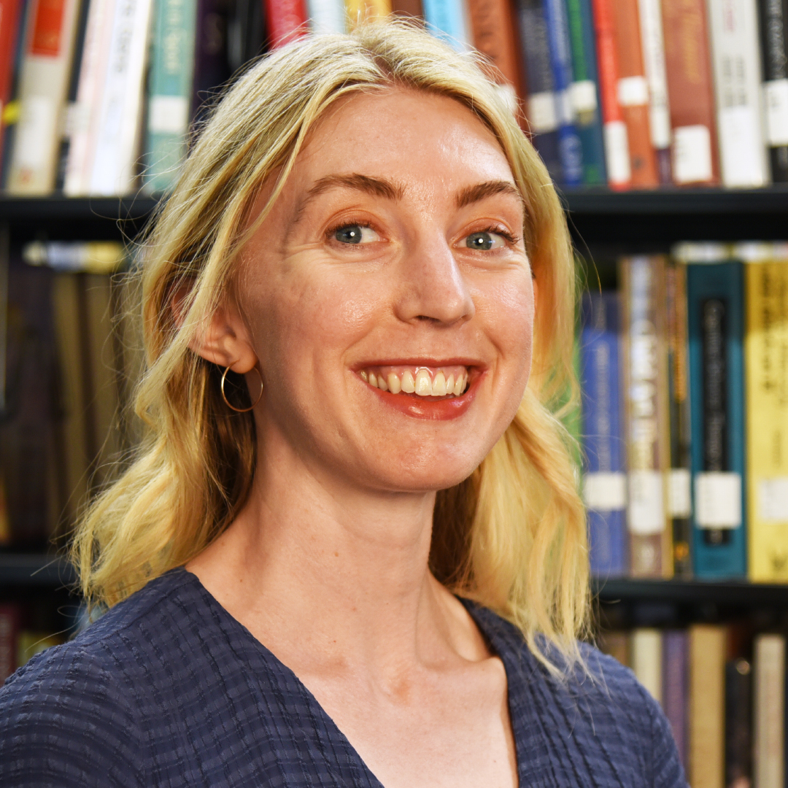
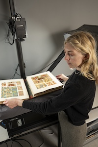
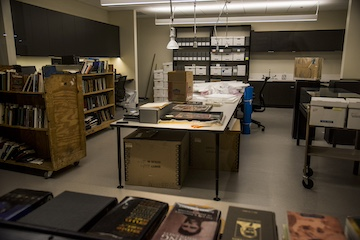

Hannah AlNemri, Lynelle Collo, Bob Emrich, Toni Vang

Bailey Berry is the Librarian for Digital Conversion, Publishing, and Curation at Pepperdine University. Pepperdine University is a private, Christian university located in Malibu, CA. Bailey received her MLIS from UCLA and she was then hired to Pepperdine in 2022 where she has been since. This position is a specialization which sits at the intersection of archives, digital preservation, and overall scholarly communication. Bailey’s work centers on digitizing archival materials, managing digital collections, and making both physical and born-digital materials accessible in digital formats.
Within the library ecosystem, this role is responsible for overseeing processes that allow physical archival materials to be transformed into accessible digital resources. This includes managing digitization equipment, organizing digital files, creating metadata, and ensuring the successful preservation of materials over time. Digital curation librarians also maintain digital repositories and publishing platforms that allow researchers, students, and members of the public to access digitized materials. In many cases, this role also involves working with institutional repositories or digital publishing platforms that host research outputs such as faculty publications, student theses, and other scholarly materials.
This role exists within a network of interconnected systems, actors, and institutional priorities. Decisions about digitization and digital curation have ripple effects across the library and broader community. Metadata choices impact discoverability, preservation workflows affect long-term access, and engagement with donors and research influences trust and ethical stewardship. Bailey’s work must find a balance between technical, ethical, community-centered, and especially institution-centered considerations. While there may be aspects of the job that Bailey does not like as much as others, she is a member of the institution, and thus must work for the betterment of the university rather than follow what she would like to do.
This role is shaped by institutional resources, responsibilities, staffing levels, and a constant evolution of digital infrastructures and technology. The influx of born-digital materials and the ongoing development of digital preservation tools and standards, or the lack thereof, require continual adaptation. In this sense, Bailey functions as both a specialist and a systems navigator, mediating between the technical, institutional, and social dimensions of the library and archives. Overall, Bailey’s position exemplifies the complex, adaptive, and collaborative nature of digital curation, highlighting how one position can play many different roles within a larger framework.
Librarian for Digital Publishing, Curation, and Conversion
• The Librarian in this position manages everything regarding Digital Curation, Digital Conversion, and Digital Publishing.
• Bailey shared that her primary responsibility is to digitize items in Pepperdine’s archives and put them online to the university’s digital collections via Quartex. However, while she often encounters the perception that most of her job is digitizing materials to this end, she spends the majority of her time working on creative project development and curation for the new projects that will eventually get digitized.
• In addition to digitization projects, Bailey’s responsibilities include managing Pepperdine’s Institutional Repository through Digital Commons, oral history projects, digital preservation projects, interfacing with researchers and local historians, and training and managing a team of employees.
• Another unique feature of Bailey’s role in the university is that her job is fairly new, only becoming an official position at Pepperdine University in 2016.

Image via Pepperdine University
• The role of Librarian for Digital Publishing, Curation, and Conversion has many requirements and preferences to be considered for the position. In order to be hired, a Master’s Degree in Library and Information Science is required from an ALA-accredited school. It is also required for the librarian to be familiar or fluent in Metadata programs (LCSH, MARC, Dublin Core, and XML). In addition to these requirements, Pepperdine University would also prefer that applicants for this position have 3.5 years of digital curation experience within an academic library as well as experience with digital preservation.
• This Digital Librarian position from the National Museum of American History at the Smithsonian Institution is situated within the Department of Digital Access and Archives. It is similar to Bailey’s position as they both share responsibilities in developing workflows, managing digital assets, and ensuring long-term preservation.
• One of the primary differences between this role and Bailey’s is the overall scale. This role focuses on leading teams and setting policies, procedures, and technical standards for a much more vast institutional digital ecosystem. Additionally, the Smithsonian role requires oversight across multiple digitization formats, such as 2D, 3D, audiovisual, and emphasizes cross-departmental coordination.
• This position requires specialized experience equivalent to a GS-13 federal service level, indicating a high-level technical specialist or supervisor and often a master’s degree in a relevant field, such as an MLIS degree. However, there is no strictly stated educational requirement; rather, the focus is experience leading projects, determining priorities, and creating policies.
• This position highlights the variance in digital collections work depending on the scale and institutional type. While entry to mid-level academic positions often focus on more hands-on digitization and metadata creation, a larger scale institution such as a national museum combines technical responsibilities with leadership, strategic planning, and policy development.
• This Digital Archivist position from Academy of Motion Picture Arts and Sciences is similar to Bailey’s position in the field of digital preservation as the person in this position is primarily concerned and responsible for making the digital media materials accessible for viewing and distribution.
• One of the primary differences between this role as Digital Archivist and Bailey’s position as Librarian for Digital Publishing, Curation, and Conversion is that due to the role does not seem concerned with the curation of digital exhibitions, rather a person in this position would facilitate access to existing digital collections.
• This role reports to the Director of Digital Management Services, and requires at least 2 years of experience in web-based data applications and digital asset management, as well as familiarity with creating metadata and operating digital asset management systems.
• The job description notably does not list a Master’s degree in Library and Information Sciences as one of the requirements for applicants, making this a good entry-level position for those who are interested in digital archival work, yet have not completed their MLIS degree or do not plan on pursuing one. While a lot of the required and preferred skills that this position is looking for is taught within MLIS programs, it does put into question the relevance of the MLIS degree if individuals are capable of becoming archivists without it.
Digitization Project Assistant
• This entry-level student worker position assists in the organization and migration of files across different database platforms. They assist in the circulation of scan requests that the library receives, as well as create transcriptions and metadata for digitized materials.
• Because this is a student position there is no prior experience required for this position, although familiarity with cameras and PCs is preferred. Although being confined to undergraduate student workers at Pepperdine only, this position is a good introductory position into LIS careers for undergraduate students, as the student workers develop the basic skills necessary to digital preservation and data management.
• The existence of this position indicates the increased opportunities students are given to explore this field of work and gain some introductory knowledge they can apply if they wish to pursue future LIS endeavors. As they were completing their undergraduate degrees, Hannah and Bob held these student positions, which had ultimately led them to pursue their Master’s in Library and Information Science.
One of the main skills necessary for a digital librarian is the ability to digitize materials. Thus, familiarity with some form of technology to digitize materials, such as a CaptureOne Camera, and thus the CaptureOne Program, is necessary. When Bailey was first hired to her job, she had a specialist come in and help train her for a few days to use the camera and the CaptureOne setup, as she had never had hands-on experience with it before. Along with digitized materials, familiarity with metadata and how to write it, digital preservation softwares and networks, the ability to learn basic coding, cloud-based computing, and more. Thus, these skills, while preferred, are also not necessarily expected as entry-level skills into the position/field. Employers seek candidates that hold an MLIS degree, as it is expected that the basic librarian and archivist skills are taught within this program. It is interesting to consider this during a time where UCLA is currently in the process of renewing its ALA accreditation. Bailey expressed that while she had to learn a lot of skills after being hired, she felt as though UCLA’s MLIS program had provided her with an excellent foundation of skills and knowledge for her position.
While there are a myriad of skills necessary for this position, there are few “professional” opportunities to get hands-on experience, especially in MLIS programs. Much of the job is, thus, learned in the moment and through a bit of trail and error. There are, however, courses available to gain skills which are potentially not discussed or only briefly taught in MLIS programs. Through sites such as Digital Commons, Society of American Archivists (SAA), the Visual Resources Association (VRA), and the Art Libraries Society of North America (ARLIS), library professionals can gain access to different courses and conferences to aid them in their work and help them build necessary skills. For example, Bailey took a course on Digital Commons to receive a certificate on being an Institutional Repository Manager. Thus, even though there are many skills necessary for this position which students may not necessarily be prepared for or comfortable with, there are resources available.
The following are sources Bailey recommended to us:
• Society for American Archivists (SAA) — SAA is a professional Association established in 1936 dedicated to the needs and interests of archives and archivists and serves as a resource for the profession.
• Digital Commons/Elsevier - Elsevier Research Academy provides free e-learning resources and training guides.
• Visual Resources Association" - Visual Resources Association is an organization dedicated to education and research related to multimedia within educational, commercial, and cultural settings. They offer educational tools and forums regarding concerns towards media preservation and access.
• Art Libraries Society of North America (ARLIS/NA) - ARLIS/NA is an organization founded in 1972 dedicated to the arts information professions.
Labor conditions within digital archives and curation reflect many of the structural challenges libraries face. While digital collections are becoming increasingly important for research, teaching, and public access, the labor required to maintain digital infrastructures is often less visible than more traditional library services. Much of the work involved in digital creation, such as maintaining metadata systems and preserving digital files, occurs behind the scenes and requires continuous attention. Bailey explained that digital preservation often involves lots of ongoing maintenance rather than one-time projects. Digitization may create digital copies of materials, but those files must be stored, organized, and preserved in ways they can be utilized in the future. This means monitoring storage systems, updating file formats, and ensuring metadata remains accurate. Over time, these responsibilities create a continuous workload which extends beyond the initial digitization process.
Bailey’s work environment also reflects some of these practical realities of digital archival labor. Since digitization requires specialized equipment, the workplace for these positions must be able to accommodate large machines, such as a CaptureOne camera setup. Additionally, the librarian must be able to control the lighting in the room. In Bailey’s case, she works in a room without any windows and only one door so that lighting can be carefully managed during scanning and photography. The CaptureOne camera setup occupies a large portion of the room, and when she works with student workers or interns, Bailey often has to work in the dark while students digitize materials. The physical environment demonstrates that digital archival labor involves not only digital infrastructure but also specialized physical environments.
Another important labor issue in the field involves the lack of equity and recognition. The underevaluation of technical and preservation work, along with the relative invisibility of digital labor, can exacerbate inequities in pay and institutional influence. Bailey had also mentioned that she felt as though the Library had to justify its importance towards Pepperdine University, highlighting how libraries as an institution seem as though they are becoming less valuable, sentiments that are reflected through budget cuts that continue to be made. The doubt towards the importance of libraries could also in part be a result of online open access, which digitizing libraries, much like the one Bailey works at, contribute to. There is a paradox between librarians wanting to make things accessible to researchers while also recognizing the importance of patron and researcher retention.

The professional ecosystem surrounding digital curation and digital archives is highly disciplinary, spanning academic libraries, museums, government agencies, and private-sector organizations which manage digital assets. Roles similar to Bailey’s exist under a wide range of titles, including Digital Archivist, Digital Initiatives Librarian, Digital Preservation Librarian, and Scholarly Communications Librarian. The diversity of the positions and titles reflect the evolving nature of the field, where responsibilities are mixed and blend archival practice, information technology, and digital publishing infrastructure. While we were searching for job postings, we found that there is no single dominant job title in digital curation, as each institution holds their own distinct titles and descriptions depending on their collections and digital infrastructure.
Image via Pepperdine University
This position is simultaneously an independent and collaborative position within the library and institution as a whole. While the act of digitizing materials itself can be more of an individual task, collaboration becomes necessary when working with special collections, rare materials, or donor collections. Bailey explained in our interview that digitization projects often require coordination with special collections librarians, faculty researchers, alumni affairs staff, students, and community members. For example, when obtaining or digitizing collections which were given to the university by donors, librarians and archivists must work with the donors or their representatives to ensure that the collections are being processed and maintained in accordance with the donors’ wishes. Additionally, Bailey frequently works with student workers and interns both in the digitization lab and classes, as well as faculty members conducting research using the collections. Currently, Bailey is currently working on an oral history project documenting the Los Angeles fires from last year. Thus, she is currently collaborating with the greater Malibu community whilst navigating ethical questions about how to preserve experiences when there is trauma involved.
The broader professional context of this role reflects a shift towards managing digital materials and infrastructure. Thus, it is a position which is simultaneously growing and shrinking, as there is a constant, growing need to digitize materials and maintain born-digital collections. Digitization projects generate new digital projects and access pathways, but they also require sustained investments in infrastructure, policies, and preservation strategies to maintain digital resources over time. However, there is also a limited budget and lack of funding in many GLAM institutions, and oftentimes, Bailey notes, that libraries are often the first to get cut. Thus, while there are still physical materials which need to be digitized, and a constant influx of born-digital materials, the job field may not be able to grow as it needs to. Despite these challenges, digital curation positions exist across many institutional contexts, including universities, museums, archives, cultural heritage organizations, etc., reflecting the increasing importance and acknowledgement of digital preservation work.